About Me
Passionate software developer, geek, family guy and musician wannabe.
Man on few words so... some lorem from now on.
Facere possimus, omnis voluptas assumenda est, omnis dolor repellendus. Cupiditate non provident, similique sunt in culpa qui officia deserunt mollitia. Nemo enim ipsam voluptatem quia voluptas sit aspernatur aut odit aut fugit.
- Et harum quidem rerum facilis est et expedita distinctio.
- Do eiusmod tempor incididunt ut labore et dolore magna aliqua.
- Itaque earum rerum hic tenetur a sapiente delectus.
Nemo enim ipsam voluptatem quia voluptas sit aspernatur aut odit aut fugit. Nisi ut aliquid ex ea commodi consequatur? Quis autem vel eum iure reprehenderit qui in ea voluptate velit esse quam. Nam libero tempore, cum soluta nobis est eligendi optio cumque nihil impedit quo minus id quod maxime placeat.
Nisi ut aliquid ex ea commodi consequatur? Quis autem vel eum iure reprehenderit qui in ea voluptate velit esse quam. Animi, id est laborum et dolorum fuga. Esse cillum dolore eu fugiat nulla pariatur.
Itaque earum rerum hic tenetur a sapiente delectus. Ut enim ad minima veniam, quis nostrum exercitationem ullam corporis suscipit laboriosam. Temporibus autem quibusdam et aut officiis debitis aut rerum necessitatibus saepe eveniet ut et voluptates repudiandae sint et molestiae non recusandae.
Languages I speak
 
Places I've Been
- Living and Working
- Cultural Experience
Education
Instituto Intercultural 2010 to 2011
Japanese!
Motivated by my love for anime, I decided to study some Japanese, very interesting!
Universidad de Mendoza 2007 to 2008
Software Engineering
Continued studing Software Engineering for 1 more year, as opposed to Systems Engineering this career was focused on software more than project management.
Universidad Tecnológica Nacional 2000 to 2004
Systems Engineering
Started studying engineering without knowing exactly what it was about, only to find tha I love it.
Amicana 1998 to 2004
English
English at school was not good enough so I enrolled in a long english course.
Work Experience
Deviget 2013 to present
Software Engineer
Joined the Deviget family as a consultant, motivated by the chance to work remotely on great projects around the globe.
AppNexus 2013 to present
Frontend Engineer
I decided to improve my front end skills by joining the AppNexus/Twixt team.
We built Twixt as a single page application, using Python/Django on the backend, AngularJS and friends on the frontend.
I got to feel very confortable with the browser environment, I achieved my goals widely.
But it was infinitely satisfying that I was also able to grow up as a team mate and as a person. The team was awesome, full of smart people willing to share knowledge and build great things together.
XoomCode 2008 to 2013
Software Developer
At XoomCode I meet Ruby on Rails and agile development methodologies. Continued developing UIs with Adobe Flex but RoR in the back-end this time.
Developed CMS-like web sites in Rails3, but here I went back to the roots, and started writing HTML, CSS and JavaScript motivated by Haml, Sass, Blueprint and JQuery, which made me believe in web UI development again.
Worked for more than a year in a big CMS. The application was built with PHP ZendFramework and Doctrine ORM, HTML and tons of CSS and JS. To reach some performance and high-availability requirements we setup a MySQL cluster, Memcached and multiple Apache servers.
Developed Android applications, mostly for surveying purposes.
Also developed tons of Drupal and Magento sites for companies.
The company moved almost completely to Ruby on Rails development, some projects involve geo spatial data analysis, advertising, accounting, etc.
Sequre 2011 to 2011
Software Developer
As a freelancer, I worked on the commercial version of SequreISP, which adds some plugins to the OS version. SequreISP is built in Ruby on Rails and plugins are powered by Rails Engines.
GISWorking 2006 to 2008
Software Developer
Worked on a huge GIS project. At GISWorking we developed a custom framework for PHP, to meet the requirements of the app. The first version of the app UI was built with Backbase, later on we moved to Adobe Flex. One of the main features of the app was the synchronization between the mobile and desktop apps and the server. PostgreSQL and its powerful PL/pgSQL language helped a lot when dealing with performance issues. PostGIS was in charge of solving the spatial problems.
The most exciting experience at GISWorking, was work with a great team and to have the honor of leading the project.
Unibras SRL 2004 to 2006
Software Developer
I wrote a web application to manage the product's manufacturing process of the company, and helped in the process of ISO9001 certification. The application was built in PHP4, HTML, and MySQL
Skills and Personal Attributes
- Ruby
- Ruby on Rails
- AngularJS
- Javascript
- Frontend
- PostgreSQL
- Git
- Linux
- Teamwork
- HTML & CSS